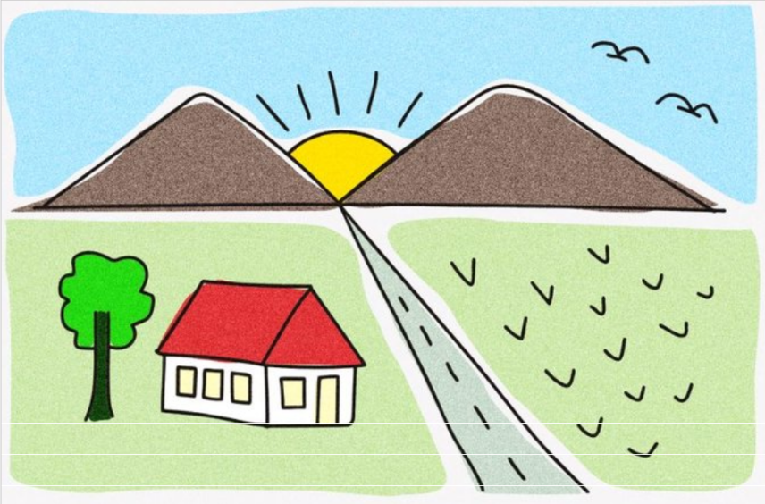

Tugas 1 Grafika Komputer
5025241102 Kemas Muhammad Athariq
5025241134 Gilbran Mahdavikia Raja

Gambar Referensi
Hasil WebGL
Kontrol:
←
→
Gerakkan burung
↑
↓
Perbesar / perkecil matahari
W
Ganti siang / malam